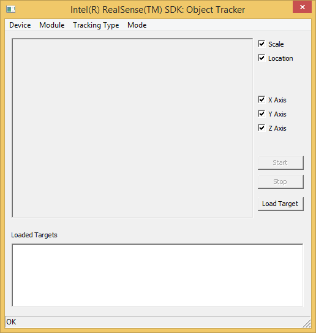
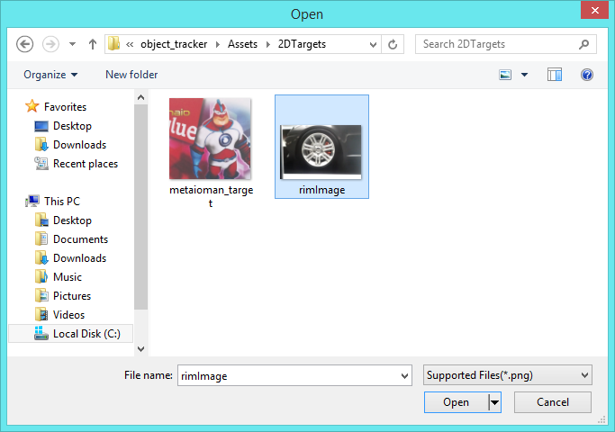
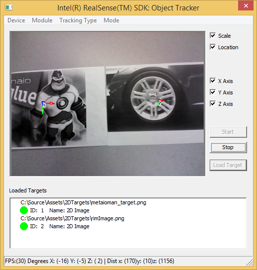
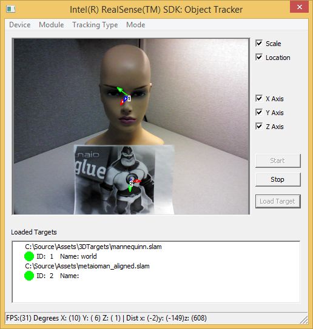
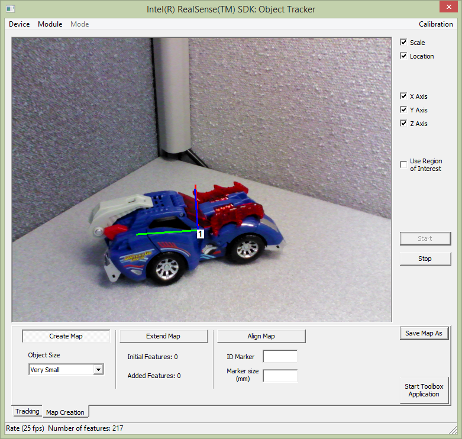

Sample: FF_ObjectTracking[.cs] |
Top Previous Next |
|
Introduction The FF_ObjectTracking[.cs] are two samples that demonstrates the capabilities of the SDK object tracking module. The samples track 2D and 3D objects within a scene. The sample without suffix is a C++ sample and the one with the .cs suffix is a C# sample. Launch You can launch the prebuilt sample directly from the $(RSSDK_DIR)/bin/$(Platform) folder of the SDK installation, or compile and execute within the Microsoft Visual Studio. The project and source files are located under $(RSSDK_DIR)/sample/FF_ObjectTracking (C++) or $(RSSDK_DIR)/framework/CSharp/FF_ObjectTracking.cs (C#). Menu Options From the menu, you can select the input device, the Metaio* object tracking recognition module, the type of tracking the user wants to load (2D, 3D or Instant 3D) and the operating mode (live streaming mode, playback mode, and record mode). The GUI is shown in Figure 141.  Figure 141: Sample object_tracker Menus 2D Tracking From the Tracking Type menu, you can select the 2D Tracking mode and load in a .png or .jpg reference image for 2D tracking. The sample 2D tracking images are available under Assets/2DTargets shown in Figure 142.  Figure 142: Sample object_tracker select 2D tracking image After selecting the image, the user can press the Start button to begin to track the corresponding image. There will be projected axes on the tracked object as shown in Figure 143.  Figure 143: Sample object_tracker tracked 2D image 3D Tracking From the Tracking Type menu, you can select the 3D tracking mode and load in a .slam or .xml file for 3D tracking, as illustrated in Figure 144. Instant 3D tracking is similar to regular 3D tracking, but the targets are automatically determined from the scene. Therefore, no targets need to be created and loaded ahead of time.  Figure 144: Sample object_tracker tracked 3D image Other GUI Options Click the Start button to activate the object tracker module. Check the Scale option to scale the images to the size of the display panel, and the Location option to toggle all axes on and off. Check the X axis, Y axis, and Z axis buttons to turn on and off the axes individually that projected on the tracked object. The Load Targets button will load different target files depending on the tracking type selected. Multiple targets can be loaded and tracked at the same time. Map Creation, Extension and Alignment The C++ sample also implements the 3D map creation functionality similar to the Metaio Toolbox application. The UI is similar to Figure 145. You can create a new map, extend an existing map with new features, and align a map to specify the coordinate system orientation and origin. The three buttons below the video panel allow switching between operations.  Figure 145: Map Creation, Extension and Alignment On the map creation tab, the Start/Stop buttons control whether features are being detected for tracking purposes. If the Start button is not enabled, the condition is not met for the current operation (no map loaded, marker ID not specified, etc.). Once an operation is complete, the map file must be explicitly saved. It is not performed automatically. While performing a map creation operation, the current status is provided in the status bar, including the number of features detected on the object. The sample application does not draw the feature points themselves, but the coordinate system pose is drawn as in tracking modes. A region of interest can be specified for map creation and instant 3D tracking. The check box is enabled only when the region may be used. To specify a region, the video must be streaming. Left click once on the video to specify the first corner. Left click again to specify the opposite corner. The active region is drawn in real time as the mouse is moved.
|